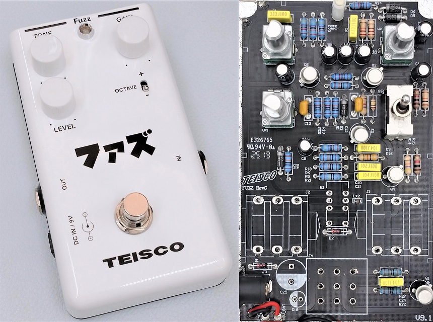
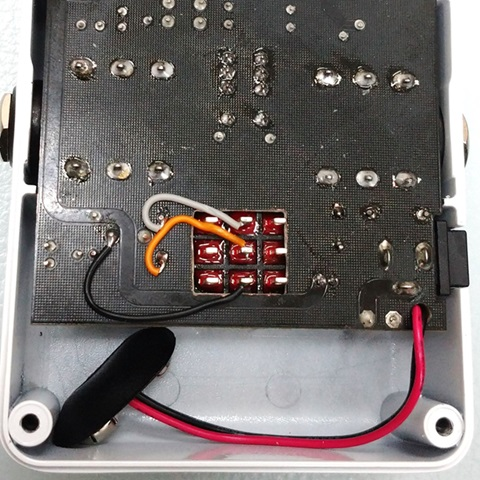
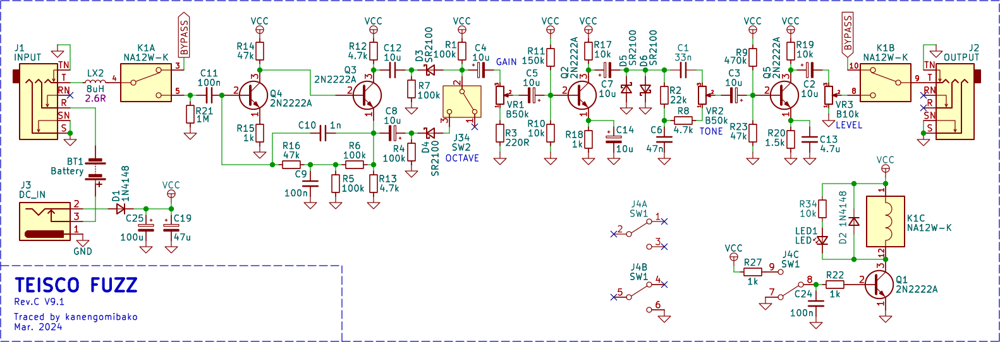
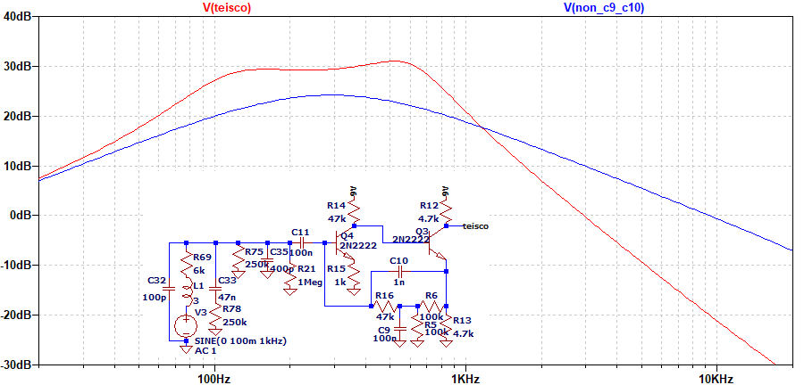
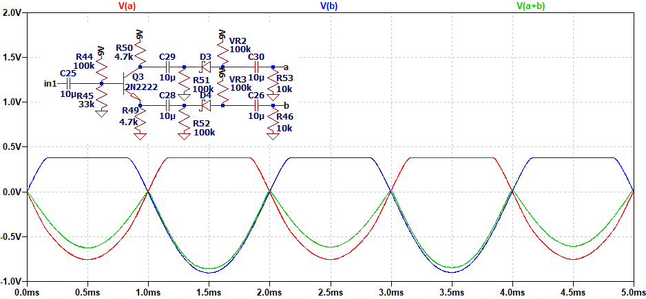
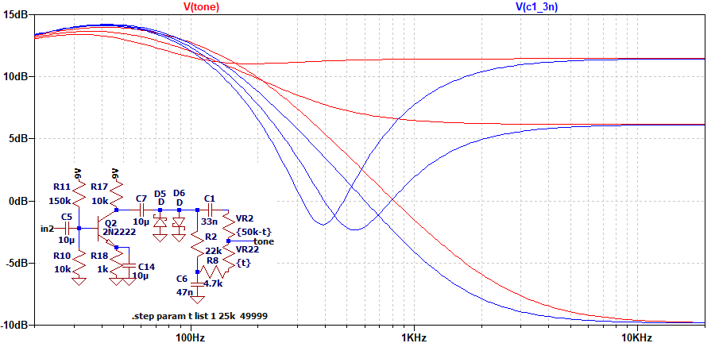

TEISCO FUZZ 修理・解析
2024年06月01日 カテゴリー：修理・改造・解析

音が出ない状態のTEISCO FUZZを手に入れたので、修理し解析しました。KiCadデータ（基板画像入り）とLTspiceの回路図データはGitHubにあります。
【修理】
中を見てみると、3PDTスイッチは1回路しか使われておらず、リレーによるバイパスだとわかりました。そしてフットスイッチが故障しており、交換することにしました。互換性があるフットスイッチを探すのは大変そうだったので、基板に穴をあけて一般的なフットスイッチを取り付けています。

配線を取り付けると、問題なく音が出て修理完了です。
▽回路図

fOXX Tone Machineと同じ構成ですが、ゲルマニウムダイオードの代わりにショットキーダイオードが使われています。また、トーン部分のC1が3nFではなく33nFです。さらに、最後のトランジスタQ5のエミッタにコンデンサが追加されており、音質としてはかなり違って聞こえると思われます。
▽シミュレーション
- 入力部（ギター直結、C9とC10がない場合と比較）

Q4、Q3の部分はファズフェイスの回路構成に似ており、偏ったクリッピングが生じていると思われます。また、入力のコンデンサC11の値は小さめで、Q3のエミッタからQ4のベースにつながる部分にコンデンサが入っており、複雑な周波数特性です。
- オクターブ ※回路簡略化・改変

Q3のコレクタとエミッタからは互いに逆の位相の音が出力され、それぞれダイオードでクリップされた音（aとb）を合わせると、全波整流したような波形（a+b）が現れます。これにより周波数が2倍の音（＝オクターブ上の音）が出るということになります。
- TONE 0% → 50% → 100% C1＝3nF（Tone Machine）と比較

C1の値を小さくすると、中音域が凹みドンシャリな特性となります。Fulltone Ultimate OctaveやJOYO Voodoo Octaveも同様の回路ですが、このコンデンサの値を切り替えるスイッチがついています。